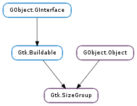

| static | new(mode) |
| add_widget(widget) | |
| get_ignore_hidden() | |
| get_mode() | |
| get_widgets() | |
| remove_widget(widget) | |
| set_ignore_hidden(ignore_hidden) | |
| set_mode(mode) |
| Name | Type | Flags | Description |
|---|---|---|---|
| bool | r/w | If True, unmapped widgets are ignored when determining the size of the group | |
| mode | Gtk.SizeGroupMode | r/w | The directions in which the size group affects the requested sizes of its component widgets |
None
| Name | Type | Access |
|---|---|---|
| parent_instance | GObject.Object | r |
Bases: GObject.Object, Gtk.Buildable
Gtk.SizeGroup provides a mechanism for grouping a number of widgets together so they all request the same amount of space. This is typically useful when you want a column of widgets to have the same size, but you can’t use a Gtk.Grid widget.
In detail, the size requested for each widget in a Gtk.SizeGroup is the maximum of the sizes that would have been requested for each widget in the size group if they were not in the size group. The mode of the size group (see Gtk.SizeGroup.set_mode ()) determines whether this applies to the horizontal size, the vertical size, or both sizes.
Note that size groups only affect the amount of space requested, not the size that the widgets finally receive. If you want the widgets in a Gtk.SizeGroup to actually be the same size, you need to pack them in such a way that they get the size they request and not more. For example, if you are packing your widgets into a table, you would not include the Gtk.AttachOptions.FILL flag.
Gtk.SizeGroup objects are referenced by each widget in the size group, so once you have added all widgets to a Gtk.SizeGroup, you can drop the initial reference to the size group with GObject.Object.unref (). If the widgets in the size group are subsequently destroyed, then they will be removed from the size group and drop their references on the size group; when all widgets have been removed, the size group will be freed.
Widgets can be part of multiple size groups; GTK+ will compute the horizontal size of a widget from the horizontal requisition of all widgets that can be reached from the widget by a chain of size groups of type Gtk.SizeGroupMode.HORIZONTAL or Gtk.SizeGroupMode.BOTH, and the vertical size from the vertical requisition of all widgets that can be reached from the widget by a chain of size groups of type Gtk.SizeGroupMode.VERTICAL or Gtk.SizeGroupMode.BOTH.
Note that only non-contextual sizes of every widget are ever consulted by size groups (since size groups have no knowledge of what size a widget will be allocated in one dimension, it cannot derive how much height a widget will receive for a given width). When grouping widgets that trade height for width in mode Gtk.SizeGroupMode.VERTICAL or Gtk.SizeGroupMode.BOTH: the height for the minimum width will be the requested height for all widgets in the group. The same is of course true when horizontally grouping width for height widgets.
Widgets that trade height-for-width should set a reasonably large minimum width by way of Gtk.Label :width-chars for instance. Widgets with static sizes as well as widgets that grow (such as ellipsizing text) need no such considerations.
Gtk.SizeGroup as Gtk.Buildable
Size groups can be specified in a UI definition by placing an <object> element with class="GtkSizeGroup" somewhere in the UI definition. The widgets that belong to the size group are specified by a <widgets> element that may contain multiple <widget> elements, one for each member of the size group. The name attribute gives the id of the widget.
A UI definition fragment with Gtk.SizeGroup
<object class="GtkSizeGroup">
<property name="mode">GTK_SIZE_GROUP_HORIZONTAL</property>
<widgets>
<widget name="radio1" />
<widget name="radio2" />
</widgets>
</object>
| Parameters: | mode (Gtk.SizeGroupMode) – the mode for the new size group. |
|---|---|
| Returns: | a newly created Gtk.SizeGroup |
| Return type: | Gtk.SizeGroup |
Create a new Gtk.SizeGroup.
| Parameters: | widget (Gtk.Widget) – the Gtk.Widget to add |
|---|
Adds a widget to a Gtk.SizeGroup. In the future, the requisition of the widget will be determined as the maximum of its requisition and the requisition of the other widgets in the size group. Whether this applies horizontally, vertically, or in both directions depends on the mode of the size group. See Gtk.SizeGroup.set_mode ().
When the widget is destroyed or no longer referenced elsewhere, it will be removed from the size group.
| Returns: | True if invisible widgets are ignored. |
|---|---|
| Return type: | bool |
Returns if invisible widgets are ignored when calculating the size.
| Returns: | the current mode of the size group. |
|---|---|
| Return type: | Gtk.SizeGroupMode |
Gets the current mode of the size group. See Gtk.SizeGroup.set_mode ().
| Returns: | a GLib.SList of widgets. The list is owned by GTK+ and should not be modified. |
|---|---|
| Return type: | [Gtk.Widget] |
Returns the list of widgets associated with size_group.
| Parameters: | widget (Gtk.Widget) – the Gtk.Widget to remove |
|---|
Removes a widget from a Gtk.SizeGroup.
| Parameters: | ignore_hidden (bool) – whether unmapped widgets should be ignored when calculating the size |
|---|
Sets whether unmapped widgets should be ignored when calculating the size.
| Parameters: | mode (Gtk.SizeGroupMode) – the mode to set for the size group. |
|---|
Sets the Gtk.SizeGroupMode of the size group. The mode of the size group determines whether the widgets in the size group should all have the same horizontal requisition (Gtk.SizeGroupMode.HORIZONTAL ) all have the same vertical requisition (Gtk.SizeGroupMode.VERTICAL ), or should all have the same requisition in both directions (Gtk.SizeGroupMode.BOTH ).